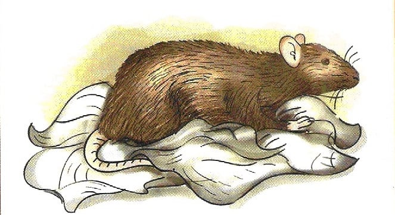
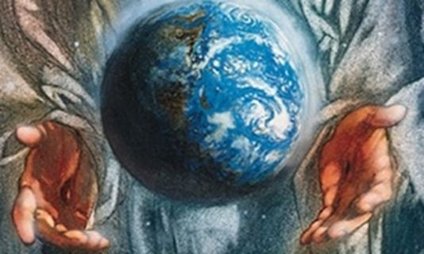

A origem da vida na Terra é um dos assuntos mais controversos e ainda não totalmente resolvidos. Assim sendo, muitos se dedicaram a pesquisar e tentar explicar a origem dos seres vivos no planeta.
As principais hipóteses para a origem da vida são:
Abogênise:
A teoria da geração espontânea ou abiogênese admite, na essência, o surgimento dos seres vivos a partir da matéria bruta de maneira contínua. A ideia surgiu com Aristóteles há mais de 2 000 anos.
De acordo com Aristóteles e seus seguidores, a matéria bruta era "um princípio ativo" que ajudava na formação dos seres vivos quando as condições do ambiente eram favoráveis.
O princípio ativo era o principal responsável pelo desenvolvimento de um organismo novo. A ideia de geração espontânea era a melhor forma de explicar as larvas que surgiam na carne crua exposta ao ar livre e os girinos que surgiam em poças de água.

Biogênese:
A teoria da biogênese sustenta que a vida só pode surgir de outra vida existente. Ou seja, os organismos vivos surgem de outros seres vivos, e não de matéria viva. Essa ideia foi apresentada em oposição à ideia de abiogênese ou geração espontânea, que defendia que a vida poderia surgir espontâneamente de matéria sem vida.
Evolução Química
A teoria da evolução química sustenta que a vida surgiu a partir de moléculas inorgânicas e orgânicas simples, que se combinaram gradualmente em condições primitivas da Terra, resultando em compostos complexos, como aminoácidos e ácidos nucleicos. Essas moléculas se organizaram em estruturas parecidas com células, originando, eventualmente, os primeiros organismos vivos. Miller e Urey desenvolveram moléculas orgânicas a partir de gases da atmosfera primitiva, o que corrobora essa teoria.
Criacionismo
O criacionismo é a crença de que a vida, a Terra e o universo foram criados por um ser divino ou sobrenatural, como é descrito nos textos religiosos. No que diz respeito à origem da vida, o criacionismo sustenta que a vida não surgiu por processos naturais (como a evolução química ou a seleção natural), mas foi criada diretamente por Deus ou por uma entidade criadara.

Biogênese x Abiogênese
Em 1668, Francesco Redi foi o primeiro a contestar a teoria da abiogênese. Para isso, fez um experimento com pedaços de carne cruas dentro de frascos fechados e abertos.
Após alguns dias, apenas surgiram larvas nos frascos abertos. Redi concluiu que as moscas depositaram ovos em frascos abertos. Devido à ausência de larvas nos frascos fechados, ficou claro que seres vivos não surgiam naturalmente.
O estudo de Redi demonstrou que os seres vivos só podem surgir a partir de uma outra forma de vida já existente.